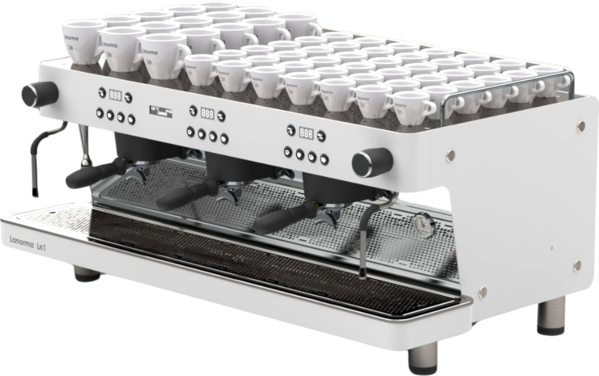
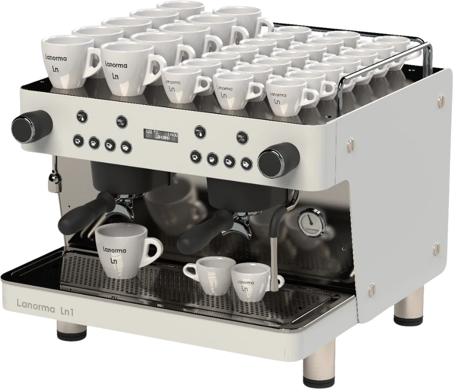

Kit de publicaciones para Instagram
Seis formatos construidos con el mismo sistema visual del sitio: la misma paleta, las mismas tres tipografías y la misma regla de producto recortado sobre el fondo. Se repiten cada semana cambiando solo el dato y la foto.

3 grupos
Caldera de 20,5 L para barras que no pueden permitirse un cuello de botella.
Formato producto
Máquina recortada sobre el fondo, sin marco. Se cambia el modelo y el dato de caldera.
La potencia del modelo de 3 grupos, a 380 – 415 V 3N.
Formato dato
Número enorme en mono, rótulo en sans. Sirve para cualquier spec del catálogo.

«Pensadas para durar y repararse. No para reemplazarse.»
Formato frase
Foto real con scrim y cita en Fraunces itálica. Para mensaje de marca, no de producto.
¿Compacta o 2 grupos?
Elige por la punta de trabajo, no por el tamaño del local. Desliza →
Formato carrusel
Portada educativa. Las siguientes tarjetas reutilizan el formato dato.

Versión vaso alto
Más hueco bajo el grupo, para vasos grandes. Se elige al comprar.
Formato configuración
Explica una opción real del catálogo que hoy casi nadie conoce.

Ensamblada y probada a mano
Cada máquina se monta y se prueba en Valencia antes de salir.
Formato taller
Lo que la competencia no puede enseñar: el montaje real. Foto del archivo propio.